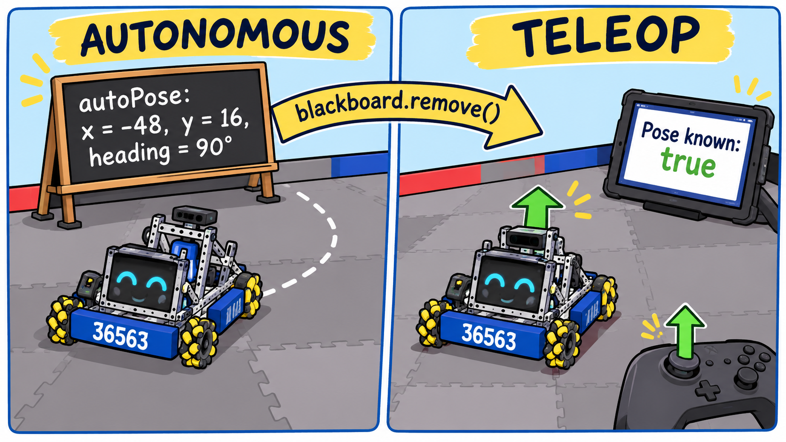

Here's something that surprises almost every team the first time. Your autonomous drives a perfect path and parks. The buzzer goes, TeleOp starts, the driver pushes the stick straight up… and the robot drives off at an angle. What happened?
Every OpMode is a fresh start. When TeleOp begins, the robot has forgotten everything auto knew:
(0, 0) facing 0° during INIT. It has no idea where on the
field it is.
In this lesson you'll teach the robot to keep its place from auto into TeleOp, and to get it back when it's lost. Every robot needs this, turret or not.
Its reward used to include all of this code, so your package may already have it. Look in
Localization.java for setPose and isPoseKnown. If they're there, read along but
don't type them in again (Java won't allow the same method twice). Just check Step 5 and Step 6 against your
code.
| Piece | What it does | Where |
|---|---|---|
| 1. Leave a note | Auto writes its position on the blackboard every loop | SimpleAuto.java |
| 2. A place to put it | setPose(), HOME, and “do we know where we are?” | Localization.java |
| 3. Read the note | TeleOp picks up the position right after START | MecanumDrive.java |
| 4. Don't guess | Show on telemetry whether we know where we are | MecanumDrive.java |
| 5. HOME reset | Lost? Park at HOME and hold RB | MecanumDrive.java |
| 6. Trust the Pinpoint | Field-centric uses the field heading, so it stays right after auto | MecanumDrive.java |
Autonomous knows exactly where the robot is the whole time, because it drives paths in field coordinates. So every loop it writes the robot's position on the blackboard: a place in the FTC software that survives from one OpMode to the next. It's like leaving a note on the fridge: “I parked at (−48, 16), facing 90°.”
The note is three numbers in an array: x, y, and the heading in degrees. It's stored under
a name, "autoPose", so TeleOp can find it.
SimpleAuto need one line.SimpleAutoOpen the follow loop. Right after the line Pose p = follower.getPose();, add the note:
SimpleAuto.java⩢ Copy // Leave our position for TeleOp. Saved every loop, in case the match timer cuts auto short.
blackboard.put("autoPose", new double[] { p.getX(), p.getY(), Math.toDegrees(p.getHeading()) });Localization a place to put itTeleOp needs a way to tell the Pinpoint “you're actually here.” That's
setPose(): it hands the Pinpoint a field position and heading. The Pinpoint keeps counting from there, so
from then on every reading is in real field inches.
We also add a flag, poseKnown. It starts false and turns
true the moment somebody tells us where we are. And we add HOME, a spot you can find by
feel; section 5 explains it.
setPose(), and isPoseKnown()Add these below getDistanceFromStartInches(), still inside the class:
Localization.java⩢ Copy // HOME: a spot the drivers can find by feel. Back of the robot against YOUR drivers' wall,
// facing away from it, left side on the loading zone's right-hand tape line.
// These numbers come from the simulator -- MEASURE your field and your robot!
private static final double ROBOT_WIDTH = 18.0; // inches, side to side
private static final double ROBOT_LENGTH = 18.0; // inches, front to back
private static final double TAPE_X = -22.0; // the loading zone's right-hand tape line
private static final double WALL_Y = -71.0; // the inside face of the drivers' wall
private static final double HOME_X = TAPE_X + ROBOT_WIDTH / 2; // -13: the robot's CENTER, not its side
private static final double HOME_Y = WALL_Y + ROBOT_LENGTH / 2; // -62
private static final double HOME_HEADING = 90.0; // facing away from the drivers
private boolean poseKnown = false; // stays false until auto hands us a pose, or the driver resets at HOME
/** Tell the Pinpoint where the robot is right now: field inches, heading in degrees. */
public void setPose(double xInches, double yInches, double headingDegrees) {
latestPose = new Pose2D(DistanceUnit.INCH, xInches, yInches, AngleUnit.DEGREES, headingDegrees);
if (pinpoint != null) {
pinpoint.setPosition(latestPose);
}
poseKnown = true;
}
/** The robot is parked at HOME: that's exactly where we are. */
public void setPoseToHome() {
setPose(HOME_X, HOME_Y, HOME_HEADING);
}
/** True once we know where we are on the field (from auto, or a HOME reset). */
public boolean isPoseKnown() {
return poseKnown;
}Right after START, TeleOp looks for the note. If it's there, it hands the position to setPose(), and
the robot knows exactly where it is from the very first second of TeleOp.
remove, which reads the note and throws it away. If you stop and restart
TeleOp later in practice, it won't trust an old note from a robot that may have been carried somewhere else.Object, so we check it really is a double[] before using it
(instanceof). No note at all? Then fromAuto is null, the check fails, and we
simply skip it.setPose. The Pinpoint spends a moment calibrating
after INIT, and a pose sent during that moment can get erased.We'll also need a stopwatch for the HOME reset in section 5, so we set that up here too.
Add this with the other import lines at the top of MecanumDrive.java:
MecanumDrive.java⩢ Copyimport com.qualcomm.robotcore.util.ElapsedTime;waitForStart()MecanumDrive.java, right after waitForStart();⩢ Copy // Where are we? If auto just ran, it left the robot's position on the blackboard.
// remove() uses it up, so a later TeleOp run can't pick up an old, stale position.
Object fromAuto = blackboard.remove("autoPose");
if (fromAuto instanceof double[]) {
double[] p = (double[]) fromAuto;
robot.localization.setPose(p[0], p[1], p[2]);
}
ElapsedTime rbHeld = new ElapsedTime(); // a stopwatch for "hold RB for half a second"
boolean homeDone = false;If there's no note (you ran TeleOp by itself, or the robot was restarted between auto and TeleOp), the robot does
not know where it is. A guess would be worse than nothing: anything that depends on the position would
confidently do the wrong thing. So the robot keeps poseKnown false and simply waits to be
told: by auto's note, or by a HOME reset.
Let's put that flag on the Driver Hub, so the drivers can see it at a glance.
MecanumDrive.java, below the other Localization telemetry⩢ Copy telemetry.addData("Pose known", robot.localization.isPoseKnown()); // false = no auto hand-off yet: hold RB at HOMEHOME is one spot right in front of your drivers, next to the loading zone, that the robot can be put in exactly, without measuring:
The position is the robot's center, so we add half the robot's size: with an 18″ × 18″ robot, HOME is at x = −22 + 9 = −13 and y = −71 + 9 = −62, facing 90°. That's what the constants in Step 2 work out.
One button fixes both of the robot's “where am I?” answers at once:
The rule: only press RB at HOME. Press it anywhere else and the robot will believe it's at HOME when it isn't.
Why hold for half a second instead of a quick tap? So a bumped button in the middle of a match
can't scramble the robot's idea of where it is. The ElapsedTime stopwatch restarts every loop that RB is
up; only when it reaches 0.5 seconds does the reset happen, and homeDone makes sure it happens just once
per hold.
HOME is also the fix for drift. Odometry is very good, but after two minutes of bumping into robots it can be off by an inch or two. A quick hold of RB at HOME wipes the slate clean.
Now the fix for the robot that drove off at an angle. Field-centric driving needs to know which way the robot faces compared to the drivers. Until now it asked the IMU, and the IMU only knows which way the robot faced when TeleOp started.
The Pinpoint doesn't have that problem. Auto told it the real start pose, and the note carried that pose into TeleOp, so its heading is a true field heading. So once the pose is known, field-centric uses the Pinpoint's heading instead.
There's one small conversion. On the field, facing away from your drivers is heading 90°. But field-centric calls that direction 0 (“straight ahead”). So we subtract 90:
heading = Math.toRadians(robot.localization.getHeadingDegrees() - 90);If the pose isn't known yet, we fall back to the IMU, just like before. And HOME lines both up: at HOME the Pinpoint says 90° (so this gives 0) and the IMU is reset to 0.
Open the IMU : Heading section. Delete what's there now (the old
double heading = imu... line, the two Heading telemetry lines, and the old
if (gamepad1.right_bumper) { imu.resetYaw(); }) and type this in its place. The quick RB tap is replaced
by the HOME reset.
MecanumDrive.java, replacing the old heading code⩢ Copy // Field-centric "forward": once we know our field pose (from auto or HOME), use the Pinpoint's
// FIELD heading -- the IMU only knows which way we faced when TeleOp started.
// 90 deg on the field = facing away from your drivers = field-centric 0, so subtract 90.
double heading;
if (robot.localization.isPoseKnown()) {
heading = Math.toRadians(robot.localization.getHeadingDegrees() - 90);
} else {
heading = imu.getRobotYawPitchRollAngles().getYaw(AngleUnit.RADIANS); // no pose yet: same as before
}
telemetry.addData("Heading (deg)", Math.toDegrees(heading));
telemetry.addData("Heading (rad)", heading);
// HOME reset: park at HOME and hold RB for half a second. Resets field-centric "forward"
// (the IMU) AND tells odometry exactly where the robot is. Only press it at HOME!
if (!gamepad1.right_bumper) {
rbHeld.reset(); // the stopwatch restarts whenever RB is up
homeDone = false;
} else if (rbHeld.seconds() >= 0.5 && !homeDone) {
imu.resetYaw();
robot.localization.setPoseToHome();
homeDone = true;
}
if (homeDone) telemetry.addLine("HOME: position reset. Let go of RB.");double heading; on its own line?We declare the variable first, without a value, then the if/else gives it one
either way. Java checks that every path sets it before it's used, so you can't forget a case.
In a real match there are only 8 seconds between auto and TeleOp. Scrolling for the right TeleOp under that pressure is how teams end up running the wrong program. The Driver Hub has a helper for that.
Add preselectTeleOp to your auto's annotation, and the Driver Hub turns the preselect on by itself
every time you pick that auto. The name must match your TeleOp's name exactly.
@Autonomous(name = "SimpleAuto", group = "BIOBUZZ", preselectTeleOp = "MecanumDrive")true.false. Drive to
HOME, hold RB for half a second, and watch it turn true.Knowing exactly where the robot is unlocks a lot. In the Specialized Subsystems lessons, Auto-Aim uses this same position to keep a turret pointed at the hive while you drive.